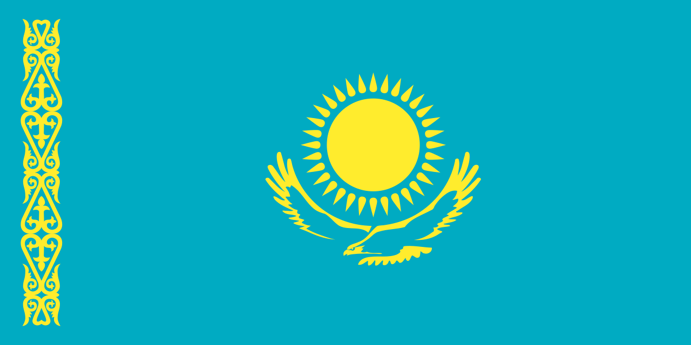

Әскери негіздер · №5 · Рәміздер Military Basics · No.5 · Symbols Воинские основы · №5 · Символы
Ту, елтаңба және әнұран — мемлекеттің тәуелсіздігі мен бірлігінің белгілері. Flag, emblem and anthem — signs of the state's independence and unity. Флаг, герб и гимн — знаки независимости и единства государства.

Мемлекеттік рәміздер — егемендік пен тәуелсіздіктің ресми белгілері: Мемлекеттік Ту, Мемлекеттік Елтаңба және Мемлекеттік Әнұран. Олардың сипаттамасы мен қолдану тәртібі Конституциямен және «Қазақстан Республикасының мемлекеттік рәміздері туралы» конституциялық заңмен бекітілген. Үшеуі де 1992 жылы қабылданды, ал қазіргі Елтаңба мен Ту 2024 жылы нақтыланды. Рәміздер күні — 4 маусым. State symbols are the official signs of sovereignty and independence: the State Flag, the State Emblem and the State Anthem. Their description and use are set by the Constitution and the constitutional law "On the State Symbols of the Republic of Kazakhstan". All three were adopted in 1992. The Day of State Symbols is marked on 4 June. Государственные символы — официальные знаки суверенитета и независимости: Государственный флаг, Государственный герб (Елтаңба) и Государственный гимн. Их описание и порядок использования закреплены Конституцией и конституционным законом «О государственных символах Республики Казахстан». Все три приняты в 1992 году. День государственных символов — 4 июня.
Мемлекеттік ТуState FlagГосударственный флаг
Мемлекеттік ЕлтаңбаState EmblemГосударственный герб
Мемлекеттік ӘнұранState AnthemГосударственный гимн
| ЭлементElementЭлемент | Нені білдіредіMeaningЧто означает |
|---|---|
| Көгілдір түсSky-blue fieldГолубой фон | ашық аспан, бейбітшілік, амандық және халықтың бірлігіthe clear sky, peace, well-being and the unity of the peopleчистое небо, мир, благополучие и единство народа |
| Алтын күн · 32 сәулеGolden sun · 32 raysЗолотое солнце · 32 луча | өмір көзі, молшылық пен берекенің нышаны; сәулелер дән масағына ұқсасthe source of life, abundance and bounty; the rays resemble grainисточник жизни, изобилие и достаток; лучи напоминают зёрна |
| Қалықтаған дала қыраныSoaring steppe eagleПарящий степной беркут | еркіндік, тәуелсіздік, қуат және болашаққа биік ұмтылысfreedom, independence, power and aspiration to the heightsсвобода, независимость, мощь и устремление ввысь |
| Сабы жанындағы ою-өрнекOrnament along the hoistОрнамент у древка | «қошқар мүйіз» — ұлттық өнер мен мәдениеттің рәмізіthe "koshkar-muiz" pattern — a symbol of national art and cultureузор «кошкар-мүйіз» — символ национального искусства и культуры |
| ЭлементElementЭлемент | Нені білдіредіMeaningЧто означает |
|---|---|
| Шаңырақ (орталық)Shanyrak (centre)Шанырак (центр) | ортақ үй, шаңырақ астындағы татулық пен барлық халықтың бірлігіa common home and the unity of all peoples under one roofобщий дом, согласие и единство всех народов под одним кровом |
| Уықтар (күн сәулесіндей)Uyks (sunrays)Уыки (как лучи) | молшылық, амандық, өмірдің жылуыprosperity, well-being and the warmth of lifeизобилие, благополучие и тепло жизни |
| Қанатты тұлпарларWinged tulpar horsesКрылатые кони-тулпары | арман, ниет тазалығы, ержүректік пен Отанға адалдықa dream, purity of intentions, courage and loyalty to the homelandмечта, чистота помыслов, мужество и преданность Родине |
| Бес бұрышты жұлдызFive-pointed starПятиконечная звезда | жол сілтеуші жарық, биік мұратқа ұмтылысa guiding light and striving towards a high idealпутеводный свет и стремление к высокому идеалу |
| «Қазақстан» жазуыThe word "Qazaqstan"Надпись «Qazaqstan» | мемлекеттің атауы — мемлекеттік тілдеthe name of the state, in the state languageназвание государства на государственном языке |
Қазіргі әнұран 2006 жылы 7 қаңтарда бекітілді. Әуенін Шәмші Қалдаяқов жазған; сөзін Жұмекен Нәжімеденов пен Нұрсұлтан Назарбаев жазған. Негізі — 1956 жылғы әйгілі ән. The current anthem was approved on 7 January 2006. The music is by Shamshi Kaldayakov; the lyrics by Zhumeken Nazhimedenov and Nursultan Nazarbayev. It is based on a well-known song of 1956. Действующий гимн утверждён 7 января 2006 года. Музыка — Шамши Калдаяков; слова — Жумекен Нажимеденов и Нурсултан Назарбаев. В основе — известная песня 1956 года.
Орындау ережесі Әнұран тұрып тыңдалады әрі орындалады; әскери қызметшілер бас киіммен болса әскери сәлем береді, азаматтар оң қолын кеудесіне қояды. Rule of performance The anthem is heard and sung standing; servicemen in headwear render a salute, while civilians place the right hand to the chest. Правило исполнения Гимн слушают и исполняют стоя; военнослужащие в головном уборе отдают воинское приветствие, гражданские прикладывают правую руку к груди.